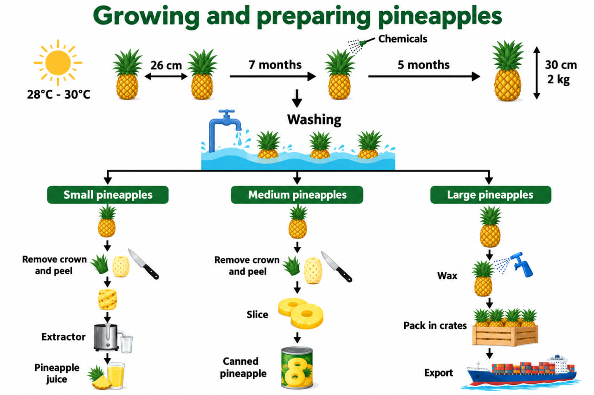
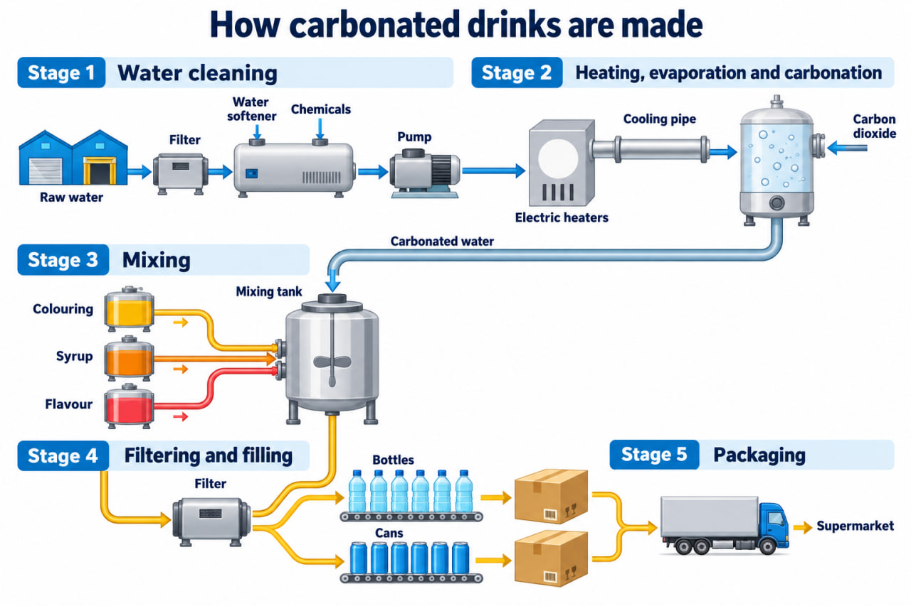
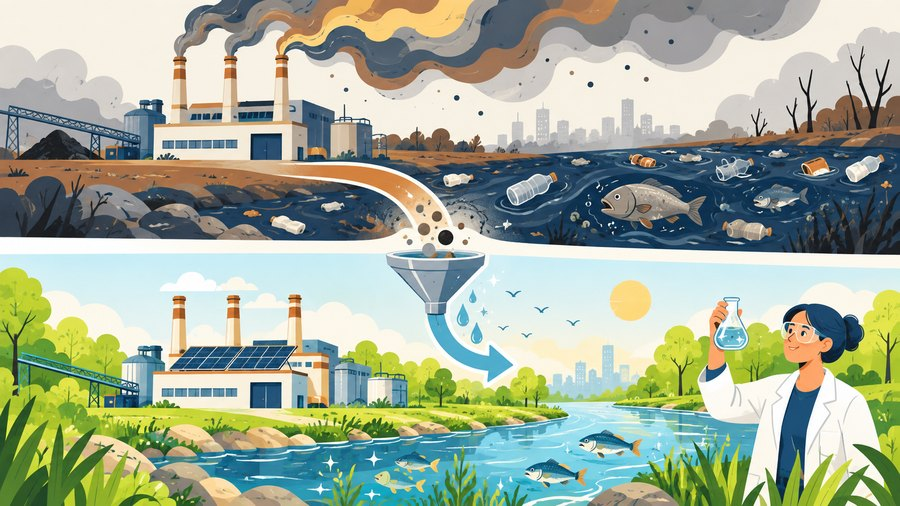
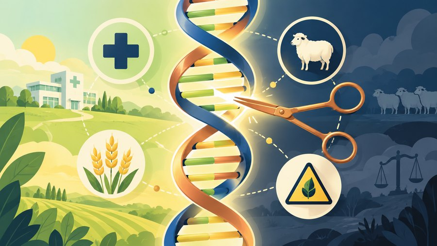

Three-block IELTS pair session for Varya + Nenarkomova. Writing Task 1 process + Writing Task 2 five essay types across STEM topics (Space · AI · Chemistry · Biology · Geography) + Speaking P2+P3 cue-card pack. Model answers, writing boxes with autosave, and a pair-practice protocol.
Эти восемь сайтов упоминают профессиональные IELTS-блогеры и бывшие экзаменаторы. Сохрани в закладки — твой основной арсенал.
improve, research…)The diagram illustrates / depicts the process by which…subsequently, once X has Y-ed, at this point.the final stage sees X Y-ed or in the final stage, ….linear / multi-step / industrial, сколько stages), потом 2-строчная карта всего процесса целиком — не «первое действие + последнее». Пример: The process during which purified water is heated and carbonated, mixed with other ingredients, filtered and finally packaged and delivered to supermarkets.The cycle begins with… — универсальный trigger для любой process-диаграммы.stage уже минус.
The diagram illustrates the cultivation and processing of pineapples, from planting through to three distinct end products.
Overall, the process can be divided into two main phases: a seven-month natural growth period requiring warmth, followed by a chemical treatment and five further months of ripening, after which the fruit is washed and processed into juice, canned slices or whole pineapples for export.
In the first phase, pineapple plants are grown at temperatures of 28–30 °C, spaced 26 cm apart. After seven months, chemicals are sprayed on the plants to accelerate maturation, and five months later the fully grown fruit reaches 30 cm in height and 2 kg in weight.
Once harvested, the pineapples undergo a washing stage before being sorted by size. Small pineapples have their crown and peel removed, after which an extractor produces pineapple juice. Medium-sized fruit are similarly peeled and then sliced for canning. The final stage sees large pineapples waxed, packed in wooden crates and exported overseas.
crowns, ethylene, wax, peeling уже на схеме. Твоя работа — списать и переформулировать, а не придумать своё.
The diagram outlines the five-stage industrial production of carbonated soft drinks, beginning with raw water intake and ending with distribution to supermarkets.
Overall, the process is clearly man-made and linear. It can be grouped into three functional phases: water preparation (stages 1–2), flavour mixing (stage 3), and bottling and distribution (stages 4–5).
In the first stage, raw water is filtered, softened and treated with chemicals before being pumped onwards. Subsequently, the water is heated by electric heaters, cooled through a cooling pipe and injected with carbon dioxide, producing carbonated water.
The carbonated water is then transferred to a mixing tank, where colouring, syrup and flavour are added simultaneously. Once the drink has been fully mixed, it undergoes a filtering stage and is dispensed into either bottles or cans on parallel filling lines. The final stage sees the filled containers packaged into boxes and loaded onto delivery trucks bound for supermarkets.
Once carrots are washed, … / Once the drink has been mixed, … — звучит band 7+ и показывает причинно-следственную связь без тяжеловесных after that.To what extent do you agree? — pick a side, defend it with 2 reasons. 1 intro + 2 body paragraphs + 1 conclusion.Discuss both views and give your opinion. — body 1 = view A, body 2 = view B, give opinion in intro + conclusion.What are the problems? What solutions can be given? — body 1 = problems, body 2 = solutions.Do advantages outweigh disadvantages? — body 1 = advantages, body 2 = disadvantages, verdict in intro+conclusion.Common skeleton for all five: Intro (paraphrase + thesis/signpost) → Body 1 → Body 2 → Conclusion (restate + final thought) · 250+ words · 40 min.
Space exploration is a waste of money. Governments should focus more on addressing public problems instead. To what extent do you agree or disagree?
Source: engnovate.com — reported recent IELTS test · also seen in IELTS International May 2026 topics
Space exploration has long captured public imagination, yet whether it should outrank terrestrial priorities is contentious. In my view, I disagree with this stance, as pressing problems on Earth demand more immediate funding, though I acknowledge the long-term value of space research.
The primary reason for prioritising Earth-based issues is their urgency and scale. Challenges such as poverty, climate change and public health crises affect billions of people today. For example, redirecting a fraction of NASA's annual budget toward clean-water infrastructure in developing nations could save tens of thousands of lives per year — a tangible benefit that cannot be matched by distant missions to Mars.
A second consideration is opportunity cost. Space programmes are notoriously expensive and uncertain in payoff. While proponents argue that research in orbit yields spin-off technologies, the same funding directed at renewable energy or medical research would deliver faster, more measurable returns for ordinary citizens.
Having said that, I would not advocate abandoning space research entirely. In the long run, understanding our solar system, detecting asteroids and developing resilient technologies may prove essential to humanity's survival. The key, therefore, is proportion: a modest, steady investment in space, with the lion's share of national budgets going to pressing earthly needs.
To round off, I firmly believe that governments must address immediate human needs before pouring resources into cosmic ambitions, though space exploration should remain a long-term, measured priority rather than being eliminated altogether.
I firmly agree / I disagree / I partly agree. Два body параграфа — две причины твоей позиции, НЕ две разные стороны.tangible benefits с цифрами или названиями.Many people feel that artificial intelligence will dramatically improve human life, while others argue it will replace human workers and threaten privacy. Discuss both views and give your own opinion.
Source: careerwiseenglish.com.au — IELTS Writing Task 2 AI Essay Sample 2026 · также simplyIELTS 2026 AI Topics · recurring theme per AllThingsIELTS 2026 topics
Artificial intelligence has become one of the defining technologies of the 21st century, and public reaction remains sharply divided. While proponents argue that AI will transform medicine, education and productivity, detractors claim it threatens employment and personal privacy. In my view, both camps raise valid concerns, but with thoughtful regulation the benefits can be made to outweigh the risks.
On the one hand, supporters point to concrete improvements AI already delivers. In healthcare, machine-learning systems detect certain cancers earlier than human radiologists. In education, adaptive platforms personalise learning for pupils who might otherwise fall behind. Industries from logistics to agriculture use AI to reduce waste and costs, benefits that in the long run can translate into cheaper goods and higher living standards.
On the other hand, critics raise two credible objections. First, routine jobs — from call-centre work to basic translation — are being automated at a pace that outstrips worker retraining. Second, modern AI depends on vast datasets, often collected without meaningful consent, raising serious privacy concerns. For instance, facial-recognition systems deployed in public spaces have been shown to erode civil liberties.
My own opinion is that AI is a double-edged sword whose outcome depends on governance. If governments invest in reskilling programmes and enforce robust data-protection laws, the technology's upside — more effective medicine, affordable services and productivity gains — can be captured while displacement and surveillance are curbed.
In conclusion, both perspectives have merit, but with the right legal frameworks the advantages of AI are, in my view, likely to prevail over its risks.
modern или good. Используй:
cutting-edge — очень новое и продвинутое: this cutting-edge technology can improve people's livesstate-of-the-art — с новейшими инновациями: my university has state-of-the-art labsuser-friendly — простое в использовании: this app is really user-friendly
Environmental problems such as pollution and climate change affect all the people in the world. Although global decisions are made to reduce these problems, the solutions are not effective. Why are the solutions ineffective? How can these problems be solved?
Source: IELTS FreeTests · Jan–Apr 2026 reported essays · variant on Writing9 problem-solution 2026 collection
Chemical pollution — from agricultural pesticides to industrial effluents — has emerged as one of the most pressing environmental crises of our era. This essay will outline the two most damaging problems and then propose practical solutions at both policy and individual level.
The most serious problem is contamination of water sources. Pesticides and heavy-metal runoff seep into rivers and groundwater, harming aquatic ecosystems and ultimately entering the human food chain. A notable example is the periodic die-off of marine life near river mouths in Southeast Asia, directly traced to upstream fertiliser overuse. A second major concern is airborne chemical pollution, which contributes to respiratory illnesses and tangible health costs in densely populated cities.
At the policy level, governments must enforce stricter emission caps on industrial polluters and subsidise organic farming methods. Taxation of harmful chemicals — modelled on carbon pricing — would create a financial disincentive, while public monitoring stations should be mandated so that violations are detectable and penalised.
At the individual level, consumers can reduce demand for chemically-intensive goods by buying locally sourced produce and household cleaners labelled as biodegradable. Beyond purchasing choices, citizens can support reforestation and participate in community-led water-quality monitoring, which both deters polluters and generates datasets governments can act on.
To round off, the problems of chemical pollution — water contamination and air-quality degradation — are severe but not insurmountable. A combination of regulatory pressure from above and conscious consumer behaviour from below offers the most realistic route to meaningful reduction.
policy level + individual level. Это универсальный шаблон для любой P-S темы (pollution, obesity, screen time, housing). Экзаменатор видит structured thinking, а не «просто перечисление идей».
Genetic engineering is an important issue in modern society. Some people think that it will improve people's lives in many ways. Others feel that it may be a threat to life on earth. Discuss both opinions and give your opinion.
Source: engnovate.com — reported IELTS test question · IELTS.NET genetic engineering 2026 bank
Recent decades have witnessed remarkable advances in biology, with gene editing and cloning moving from laboratory curiosity to practical application. While these developments bring undeniable benefits, they also raise serious ethical and safety concerns. On balance, I believe the advantages outweigh the disadvantages, provided such technologies are tightly regulated.
On the positive side, biological innovation delivers two major advantages. First, genetic engineering has transformed medicine. Diseases once considered incurable — certain inherited blindness, haemophilia and some blood cancers — can now be treated with gene therapy. Second, modified crops with higher yields and natural pest resistance help feed growing populations in regions where soil quality is poor, offering a direct response to global food insecurity.
Nevertheless, there are legitimate drawbacks. The foremost is ethical. Cloning animals and the prospect of designer babies challenge long-held moral boundaries and risk reducing human diversity. In addition, the long-term ecological effects of releasing genetically modified organisms into natural ecosystems are poorly understood; a seemingly beneficial trait could, in theory, outcompete native species and destabilise food webs.
Weighing both sides, the medical and agricultural gains are concrete and already saving lives, whereas the risks, though serious, are largely manageable through international oversight, mandatory ethical review boards and controlled field trials. The precedent of recombinant insulin — once feared, now routine — shows how rigorous regulation can turn a controversial technology into a stable public good.
In conclusion, the benefits of modern biology, while not without cost, decisively outweigh the drawbacks, so long as scientific ambition is matched by equally rigorous governance.
More and more people are leaving the countryside to live in cities. What problems does this cause, and what solutions can you suggest?
Source: IELTS Practice Online — rural-to-urban migration 2026 · variant on IELTS FreeTests Jan–Apr 2026 (top-6 most-reported theme)
Across much of the developing and developed world, large cities continue to swell while rural populations shrink. This essay will explain the two principal drivers of this migration and then set out the problems that result.
Why is this happening? The dominant factor is economic. Cities concentrate jobs, higher wages and the kind of specialised services — universities, hospitals, financial employers — that rural areas simply cannot match. A graduate in Nigeria or India can realistically expect to triple their income by relocating to Lagos or Mumbai. A second driver is lifestyle and infrastructure: urban centres offer faster internet, better schools and more extensive cultural amenities, all of which are particularly attractive to young adults seeking opportunity.
What problems does it cause? The most visible is pressure on urban housing. Rapid population growth outstrips the construction of affordable homes, leading to the expansion of informal settlements and rising rents that squeeze lower-income workers. A second serious consequence is the strain on infrastructure — overcrowded transport systems, overloaded sanitation and sharply increased air pollution. In rural areas, the counterpart problem is depopulation: schools close, agricultural labour becomes scarce and small towns slide into economic decline.
All things considered, the drivers of rural-to-urban migration are overwhelmingly economic and lifestyle-based, while the consequences stretch from housing shortages in cities to the hollowing out of the countryside. Addressing both sides of the ledger — targeted rural investment and smarter urban planning — will be essential if the current wave of migration is to be managed sustainably.
Why is this happening? → body 1 openener; What problems does it cause? → body 2 opener. Экзаменатор моментально видит, что ты ответила на оба вопроса — вместо того, чтобы искать ответы в стене текста.sophisticated.it could be argued that, bearing in mind, on a broader level) здесь обязательны.You should say:
I'd like to talk about a book that has genuinely shaped my thinking: Sapiens by Yuval Noah Harari. I first came across it about four years ago, during a holiday when a friend of mine wouldn't stop raving about it.
The book is essentially a sweeping history of humankind, from our earliest ancestors on the African savannah through to modern post-industrial society. What makes it unusual is that Harari isn't content to narrate events — he keeps asking why we developed as we did and whether we're actually happier as a result.
In terms of how it has influenced me, I'd pinpoint two things. Firstly, it taught me to question "common-sense" ideas that I'd never thought to challenge — things like the inevitability of money or nation-states. Harari frames these as collective fictions we've all agreed to believe, which was quite liberating. Secondly, it sparked a genuine interest in anthropology and behavioural science, and I've since read a dozen or so books in that area.
So on the whole, I'd say Sapiens changed my mental furniture more than any other book I've picked up as an adult, and I'd recommend it to anyone who likes being made to think.
You should say:
The person I'd like to talk about is a Russian architect called Alexander Brodsky. He's primarily known for what's called "paper architecture" — speculative drawings that were never meant to be built — as well as a series of small, poetic structures he's actually realised in Moscow and the countryside.
I first came across his work about five years ago, when I visited a group exhibition in the Garage Museum. One of his pieces, a tiny chapel made of reclaimed timber, stopped me dead in my tracks. There was something very quiet and deliberately imperfect about it that felt completely different from the glossy architecture I was used to.
The reason I admire him comes down to two things. Firstly, he's never chased scale or prestige. He's politely refused large commercial commissions in favour of small, intimate projects — which, in a profession dominated by ego, I find rather remarkable. Secondly, his drawings themselves are almost miniature novels: each one hints at a melancholic story.
So all in all, Brodsky stands out for me as someone who's protected a very personal creative voice over a long career, and that's exactly what I find most worth admiring.
You should say:
The journey I'd really love to make at some point in the next couple of years is a long rail trip across Japan — ideally the full length, from Hokkaido in the north down to Kyushu in the south. It's something I've been fantasising about since I first saw a documentary about the shinkansen about a decade ago.
Ideally I'd go in late October, when the autumn colours are at their peak, and I'd travel with my sister. She's a photographer, which would complement the pace of a slow rail trip perfectly. In terms of preparation, I'd probably spend a couple of months brushing up on survival Japanese, booking the main ryokan stays well in advance and working out a rough-but-flexible itinerary that leaves room for impulse stops.
The main reason I want to do this particular trip is that it combines three things I love in a single journey: scenic variety — Japan compresses mountains, coastline and temple-filled valleys into a small area — a chance to experience a culture that still feels genuinely foreign to me, and the simple pleasure of long train journeys, which I've always found strangely meditative. All things considered, it would be a trip of a lifetime.
I would go in late October / I'd probably spend a couple of months / If I had the time, I'd. Band 7+ Speaking требует mix of complex tenses — hypothetical future это один из самых чистых способов его показать.All things considered, it would be a trip of a lifetime. Нельзя обрывать монолог на середине. Last 10 секунд — закрывающая фраза с idiomatic language = +0.5 к Lexical Resource.Always, Only, Never, All, None — почти наверняка ответ False или Not given. Текст IELTS избегает абсолютов, он обычно даёт «many», «some», «often».